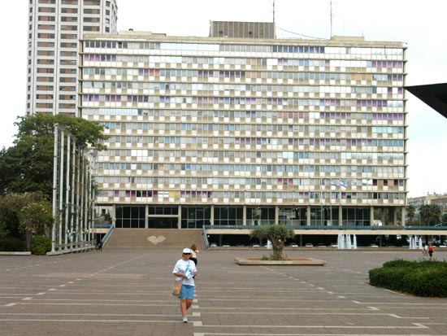
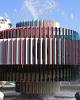

<!DOCTYPE html>
<html>
  <head>
    <meta name="viewport" content="initial-scale=1.0, user-scalable=no">
    <meta charset="utf-8">
    <title></title>
    <style>
      html, body, #map-canvas {
        height: 100%;
		width: 100%;
		top: 0px;
		right: 0xp;
		position: fixed;
        margin: 0px;
        padding: 0px;
      }
	  .audioPlayer{
		position:fixed;
		top:0px;
		left:0px;
		z-index: 2147483640;
	  }
	  .pano{
		position:absolute;
		width: 400px;
		height: 400px;

		z-index: 2147483640;
		visibility:hidden;

		border: 10px solid black;
		border-radius: 16px;
		border-top-left-radius:16px;
		border-top-right-radius:16px;		
	  }		  
	  .msg{
		position:fixed;
		width: 400px;
		height: 250px;

		z-index: 2147483640;
		display:none;
		font-family: arial;
		font-size: 30px;
		color: white;
		text-align: center;

		/* Safari 4-5, Chrome 1-9 */
		background: -webkit-gradient(linear, 0% 0%, 0% 100%, from(black), to(white));

		/* Safari 5.1, Chrome 10+ */
		background: -webkit-linear-gradient(top, #807B7A, #474141);

		border: 10px solid black;
		border-radius: 16px;
		border-top-left-radius:16px;
		border-top-right-radius:16px;		
	  }
	  .panoInfo{
		width: 400px;
		height: 100px;

		font-family: arial;
		font-size: 30px;
		color: white;
		text-align: center;

		/* Safari 4-5, Chrome 1-9 */
		background: -webkit-gradient(linear, 0% 0%, 0% 100%, from(black), to(white));

		/* Safari 5.1, Chrome 10+ */
		background: -webkit-linear-gradient(top, #807B7A, #474141);

		border: 10px solid black;
		border-radius: 16px;
		border-top-left-radius:16px;
		border-top-right-radius:16px;		
	  }	  
	  .grayCover{
		width: 100%;
		height: 100%;
		position:fixed;
		top:0px:
		left:0px;
		background-color: white;
		z-index: 2147483639;
		opacity:0.7;		
	  }
	  
    </style>
    <script src="http://code.jquery.com/jquery-1.9.1.js"></script>
    <script src="http://code.jquery.com/ui/1.10.3/jquery-ui.js"></script>
    <script src="https://maps.googleapis.com/maps/api/js?v=3.exp&sensor=false"></script>
	<SCRIPT LANGUAGE="JavaScript">
	<!--
	////////////////////////////////////////
	// F. Permadi 2002
	////////////////////////////////////////
	var text="<br/>Day 1 - Tel Aviv<br/><br/>Rabin Square<br/>Dizengoff Square";
			
	var delay=50;
	var currentChar=1;
	var destination="[none]";
	function type()
	{
		//if (document.all)
		{
			var dest=document.getElementById(destination);
			if (dest)// && dest.innerHTML)
			{
				dest.innerHTML=text.substr(0, currentChar)+"_";
				currentChar++;
				if (currentChar>text.length)
				{
					currentChar=1;
					setTimeout("startDay1()", 2000);
				}	
				else
				{
					setTimeout("type()", delay);
				}
			}
		}
	}

	function startTyping(textParam, delayParam, destinationParam)
	{
		text=textParam;
		delay=delayParam;
		currentChar=1;
		destination=destinationParam;
		type();
	}
	//-->  
	</SCRIPT>
	
    <script>
	var myLatlng;
	var mapOptions;
	var map;
	var panorama;
	var marker;
	
	function setElementToScreenCenter(e){
		var w = e.width();
		var h = e.height();
		var winH = window.innerHeight;
		var winW = window.innerWidth;
		
		var left = (winW - w) / 2;
		var top = (winH - h) / 2;

		e.css('top',top);
		e.css('left',left);	
	}
	
	function startDay1(){
		$("#msg").toggle( 'drop',{ direction: "left" }, 500);	
		setTimeout(function(){
			$('#grayCover').css('display','none');
		},1500);
		
		setTimeout(function(){
			startClip();
		},2500);	
	}	
	
	function initialize() {
		myLatlng = new google.maps.LatLng(32.08018,34.78056);
		mapOptions = {
			zoom: 18,
			center: myLatlng,
			mapTypeId: google.maps.MapTypeId.ROADMAP
		}
		map = new google.maps.Map(document.getElementById('map-canvas'), mapOptions);

		setElementToScreenCenter($("#msg"));
		$("#msg").toggle( 'drop',{ direction: "left" }, 500);

		var panoramaOptions = {
		position: myLatlng,
		pov: {
		  heading: 1,
		  pitch: 10
		}
		};	
		panorama = new  google.maps.StreetViewPanorama(document.getElementById('pano'),panoramaOptions);
		map.setStreetView(panorama);
	}
	
	function sleep(delay) {
		var start = new Date().getTime();
		while (new Date().getTime() < start + delay);
	}
  
	function showPics(iw){
		setTimeout(function(){
			iw.close();
			var infowindow = new google.maps.InfoWindow({
				  content: ''
			});
			infowindow.open(map,marker);	
			
			window.setTimeout(function(){
				document.getElementById("img1").src = 'pics/2.jpg';
			},2000);
			
			window.setTimeout(function(){
				document.getElementById("img1").src = 'pics/3.jpg';
			},3000);	
			
			window.setTimeout(function(){
				document.getElementById("img1").src = 'pics/4.jpg';
			},4000);		
			
			setTimeout(function(){
				infowindow.close();
			},5000);	

			var infowindow2 = new google.maps.InfoWindow({
				  content: ''
			});		
			
			setTimeout(function(){
				// Instantiate a directions service.
				directionsService = new google.maps.DirectionsService();	
				directionsDisplay = new google.maps.DirectionsRenderer();
				directionsDisplay.setMap(map);
				
				var start = new google.maps.LatLng(32.08018,34.78056);
				var end = new google.maps.LatLng(32.077825,34.773898);  
				var request = {
				  origin:start,
				  destination:end,
				  travelMode: google.maps.TravelMode.WALKING
				};


				var image = {
					url: 'pics/Person.png',
					// This marker is 20 pixels wide by 32 pixels tall.
				};			
				var movingMarker3 = new google.maps.Marker({
					position: temp,
					map: map,
					icon: image
				});		
				
				var temp;
				directionsService.route(request, function(response, status) {
					if (status == google.maps.DirectionsStatus.OK) {
						directionsDisplay.setDirections(response);		  
					}

					var i = 0;
					setTimeout(function(){					
						var walkingInterval = setInterval(function(){
							i++;
							temp = response.routes[0].overview_path[i];					
							movingMarker3.setPosition(temp);
							if (i==response.routes[0].overview_path.length-1){
								clearInterval(walkingInterval);							
								
								setTimeout(function(){				
									map.panTo(end);
								},300);	

								setTimeout(function(){
									infowindow2.open(map,movingMarker3);
									document.getElementById("img2").src = 'pics/5.jpg';
								},1300);

								setTimeout(function(){
									document.getElementById("img2").src = 'pics/6.jpg';
								},2300);			
								
								setTimeout(function(){
									document.getElementById("img2").src = 'pics/7.jpg';
									infowindow.open();
								},3300);															
							}
						},100);
					},2000);
				});			
			},6000);
		}, 2000);
	}
	
	function startClip(){
		var image = {
			url: 'pics/Person.png',
			// This marker is 20 pixels wide by 32 pixels tall.
		};	
		
		marker = new google.maps.Marker({
		  position: myLatlng,
		  map: map,
		  icon: image
		});

		window.setTimeout(function(){
			var winH = window.innerHeight;
			var winW = window.innerWidth;
			var left = (winW - 400) / 2;
			var top = (winH - 400) / 2;

			$('#pano').css('top',top);
			$('#pano').css('left',left);	
			//$('#pano').css('visibility','visible');
			var infoWindowPanoInfo
			setTimeout(function(){
				infoWindowPanoInfo = new google.maps.InfoWindow({
					content: 'moses'
				});
				var f = '<div id="panoInfo" style="font-size:30px">Rabin Square panoramic street view</div>';
				infoWindowPanoInfo.setContent(f);
				infoWindowPanoInfo.open(map,marker);
				
			},1000);

			
			setTimeout(function(){
				
				$('#pano').css('visibility','visible');
				$('#pano').css('display','none');
				infoWindowPanoInfo.close();
				$("#pano").toggle( 'puff',{ direction: "left" }, 1000);	
				var i = 0;
				setTimeout(function(){
					var panoInterval = setInterval(function(){
						i+=1;
						var pov2 = {
						  heading: i,
						  pitch: 10
						};	
						panorama.setPov(pov2);
						if (i==360){
							clearInterval(panoInterval);
							setTimeout(function(){
								$("#pano").toggle( 'puff',{ direction: "left" }, 1000);
								setTimeout(function(){
								var f = '<div id="panoInfo" style="font-size:30px">Pictures taken here</div>';
								infoWindowPanoInfo.setContent(f);
									infoWindowPanoInfo.open(map,marker);
									
									showPics(infoWindowPanoInfo);
								},2000);
							},2000);
						}
					},50);			
				},1000);				
			},3000);
		},1);	
	}

	google.maps.event.addDomListener(window, 'load', initialize);

    </script>
  </head>
  <body>
	<div id="grayCover" class="grayCover"></div>
	<div id="msg" class="msg">
	</div>
	<div id="pano" class="pano">
	</div>	
    <div id="map-canvas"></div>
	<script>startTyping(text, 50, "msg");</script>
	  <div class="audioPlayer">
		  <audio onpause="" autoplay loop controls>
			  <source src="sounds/2.mp3">
		  </audio>
	  </div>
  </body>
</html>